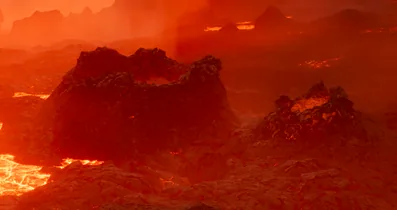
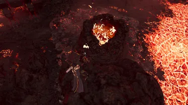
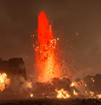
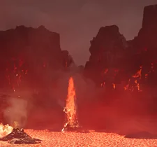

Lava Geyser
Lava Geyser

描述 信息
描述
Geysers that spout molten lava, igniting 绝地潜兵 upon 联络 and dealing 伤害 in a radius
类型
地形
Locations
Lava Geysers are an unique 特性 of Magma Deserts. They are an Environmental 危害.
效果
Lava Geysers are 小型 to 中型-sized bits of 地形, with a pocket of lava in the middle. These often 爆炸, which is safe at a 距离.
- 通常, these geysers are calm, being little more than a rock.
- Every ~20 秒 though, the ground will begin to shake and the core of the geyser will begin to bubble with lava.
- After a few 秒 of bubbling, the geyser will 爆炸, spurting out lava and molten rocks, setting anything standing too close on 火焰 and launching them away with a shockwave, which can 有时 prove deadly.
地点
Lava geysers can be found on Magma Deserts on the ground, 通常 near streams of Lava and 偶尔 inside places of interest.
图集

Two 小型, inactive Lava Geysers
Inner view of a Lava Geyser
Exploding Lava Geyser
Further spaced exploding Lava Geyser